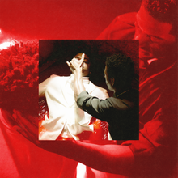
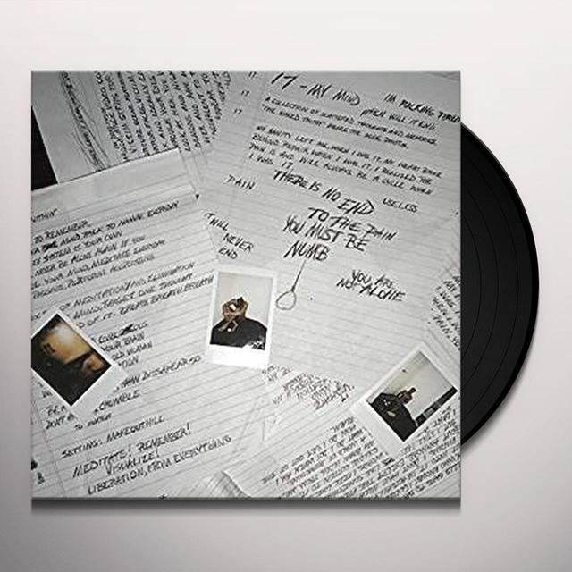
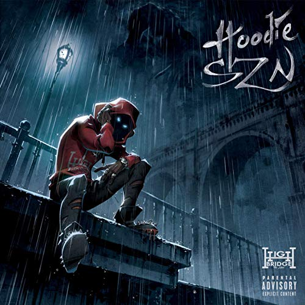
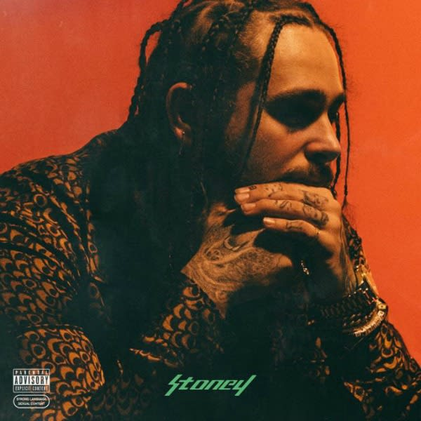
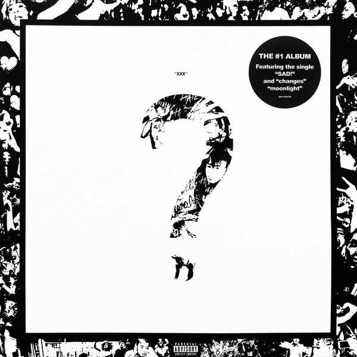

Mijn albums
login
registreer

Kodak Black
Dying to live
- Testimony - 4:00
- This Forever - 2:41
- Indentity Theft - 2:07
- Gnarly (feat. Lil Pump) - 3:06
- ZEZE (feat. Travis Scott & Offset)- 3:49
- Take One - 2:46
- MoshPit (feat. Juice WRLD) - 2:44
- Transgression - 2:15
- Malcom X.X.X - 3:16
- Calling My Spirit - 2:32
- In The Flesh - 3:`09
- Close to the grave - 3:42
- From The Cradle - 3:12
- If I'm Lyin, I'm Flyin - 2:11
- Needing Something - 3:12
- Could Of Been Diffirent - 3:12

Xxxtentacion
17
- The Explanation - 0:51
- Jocelyn Flores - 1:59
- Depression & Obsession - 2:25
- Everybody Dies In Their Nightmares - 1:35
- Revenge - 2:00
- Save Me - 2:43
- Dead Inside (Interlude) - 1:27
- Fuck Love (feat. Trippie Red)- 2:27
- Carry On - 2:10
- Orlando - 2:44
- Ayala (Outro) 1:40

A Boogie Wit da Hoodie
Hoodie SNZ
- Voices In My Head - 2:22
- Beasty - 2:33
- I Did It - 3:35
- Swervin (feat. 6ix9ine) - 3:09
- Startender (feat. Offset and Tyga) - 3:13
- Demons And Angles (feat. Juice WRLD)- 3:35
- Love Drugs And Sex (Interlude) - 2:38
- Skeezers - 3:18
- Savage - 2:49
- Come Closer - 2:37
- Look Back At It - 2:59
Lil Baby
Drip Harder
- Off White VLONE (feat. Lil Baby & Gunna) - 2:42
- Business Is Business (feat. Lil Baby & Gunna) - 3:12
- Belly (feat. Lil Baby & Gunna) - 2:55
- Deep End (feat. Lil Baby & Gunna) - 2:55
- Wourld Is Yours (feat. Lil Baby & Gunna) - 2:37
- Underdog (feat. Lil Baby & Gunna)- 3:32
- I Am (feat. Lil Baby & Gunna) - 2:25
- Seals Pills (feat. Lil Baby & Gunna) - 3:56
- My Jeans (feat. Lil Baby & Gunna)- 3:16
- Style Stealer(feat. Lil Baby & Gunna)- 3:05
- Close Friends (feat. Lil Baby & Gunna)- 3:24
- Drip To Hard (feat. Lil Baby & Gunna)- 2:26
- Never Recover(feat. Lil Baby & Gunna)- 3:15

Eminem
Kamikaze
- The Ringer - 5:38
- Greatest - 3:47
- Lucky You (feat. Lil Baby & Gunna) - 4:05
- paul Skit - 0:35
- Normal - 2:37
- Stepping Stones - 3:42
- Not Alike (feat. Rocye dA 5'9) - 0:49
- kamikaze - 5:10
- Fall - 4:48
- Nice Guy (feat. With Jessie Reyez) - 3:36
- Good Guy (feat. With Jessie Reyez) - 4:22
- Venom - 2:31

Post Malone
Stoney
- Broken Wisky Glass - 3:54
- Big Lie - 3:28
- Deja Vu (feat. Justin Bieber) - 3:54
- No Option - 3:00
- Cold - 4:29
- White Iverson - 4:17
- I Fall Apart (feat. Rocye dA 5'9) - 3:43
- Patient - 3:14
- Go Flex - 3:00
- Feel (feat. With Jessie Reyez) - 3:17
- Too Young(feat. With Jessie Reyez) - 3:57
- Congratulations - 3:40
- Up There - 3:15
- Yours Truly, Austin Post - 3:39


Xxxtentacion
?
- introduction(instructions) - 1:57
- ALONE, PART 3 - 1:50
- Moonlight (feat. Justin Bieber) - 2:15
- SAD!- 2:47
- the remedy of a broken heart - 2:40
- floor 555 - 1:33
- NUMB (feat. Rocye dA 5'9) - 3:06
- infinity(888) (feat. Joey Bada$$)- 2:57
- going down! - 1:55
- Pain = BESTFRIEND (feat. Travis Barker)- 1:42
- $$$ (feat. whit Matt Ox) - 2:10
- love yourself - 0:48
- SMASH! - 1:50
- i dont even speak spanish lol (feat. Rio Santana) - 3:12
- changes - 2:02
- hope - 1:51
- schizophrenia - 1:20
- before i close my eyes - 1:40